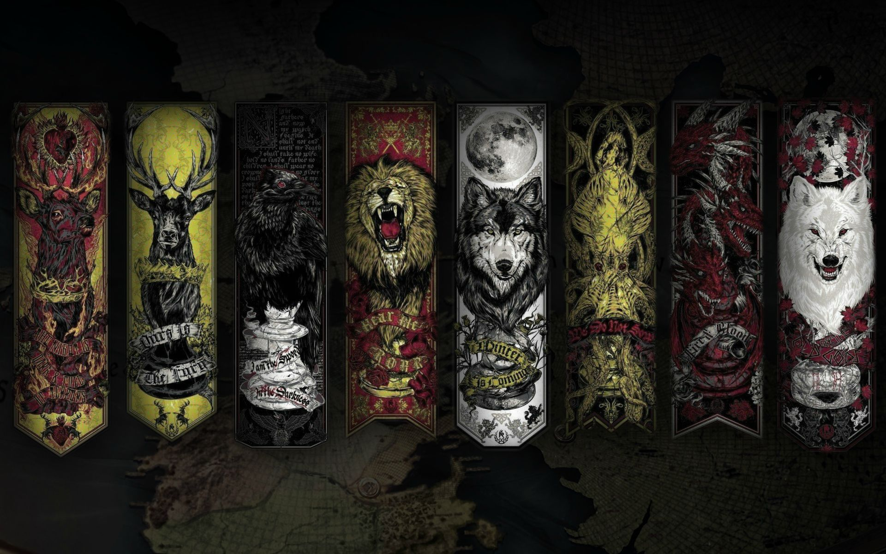

S+, A, B, C, and D House Tiers
These tier rankings are based off of house importance, longevity, success, neg/positive impact to the realm and impact in general. While a lot of these houses contain very cool characters overall, many of them didn't last too long and in comparison to other houses didn't have to make as important decisons with big impact.
S+ (The Triple OG'S) Stark, Targaryen, Lannister
A: Baratheon, Martell, Tyrell, Greyjoy
B: Mormont, Blackwater (Bronn), Reed, Arryn, Tully, Baelish, Frey, Bolton
C: Seaworth, Clegane, Tarly, Tarth
D: Karstark, Umber, Payne, Glover, Royce